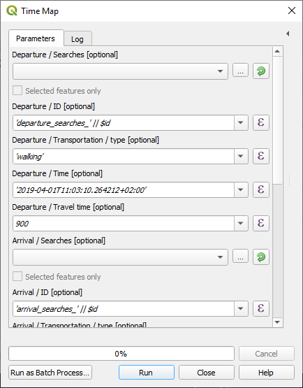

The advanced algorithm maps as closely as possible with the TimeMap endpoint from the TravelTime platform API. Thus, it allows maximum flexibility, but requires a good understanding of the API to use correctly.
It is a good idea to get familiar with the simplified algorithm first, as it already covers most of the simple use cases.
The advanced dialog looks like this :

You will find an extensive explanation of all inputs on the API documentation page.
Note that all inputs can be defined using QGIS expressions, meaning that you need to make sure to wrap your inputs in single quotes if you want to pass a string (for the transportation type for example).
There are two main differences with the API :